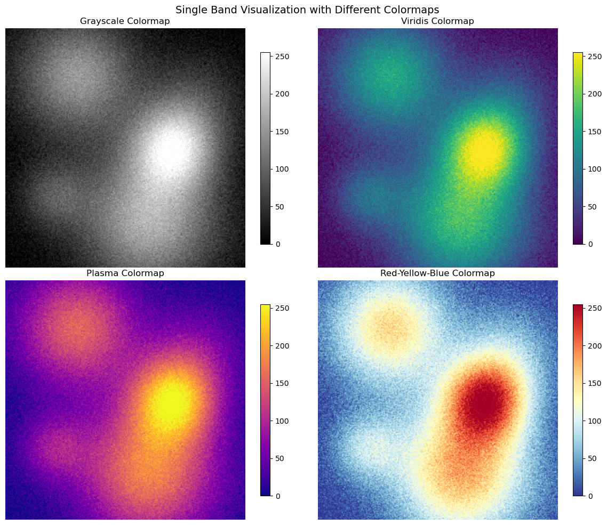
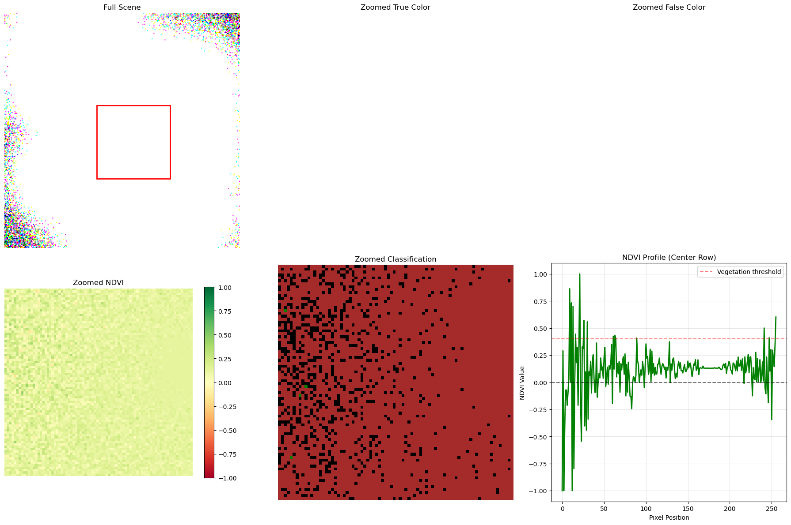

Effective visualization is crucial for understanding satellite imagery and geospatial data. This cheatsheet covers essential plotting techniques.
Code
import numpy as npimport matplotlib.pyplot as pltfrom matplotlib.colors import ListedColormapimport matplotlib.patches as patchesfrom matplotlib.patches import Rectangleimport seaborn as sns# Set style for better plotsplt.style.use('default')sns.set_palette("husl")
Creating Sample Satellite Data
Code
def create_sample_satellite_scene(size=256):"""Create a realistic-looking satellite scene"""# Create coordinate grids x = np.linspace(0, 10, size) y = np.linspace(0, 10, size) X, Y = np.meshgrid(x, y)# Simulate different land cover types# Water bodies (low values) water = np.exp(-((X -2)**2+ (Y -7)**2) /2) *0.3 water += np.exp(-((X -8)**2+ (Y -3)**2) /4) *0.25# Forest/vegetation (medium-high values) forest = np.exp(-((X -6)**2+ (Y -8)**2) /8) *0.7 forest += np.exp(-((X -3)**2+ (Y -2)**2) /6) *0.6# Urban areas (varied values) urban = np.exp(-((X -7)**2+ (Y -5)**2) /3) *0.8# Combine and add noise scene = water + forest + urban noise = np.random.normal(0, 0.05, scene.shape) scene = np.clip(scene + noise, 0, 1)# Scale to typical satellite data rangereturn (scene *255).astype(np.uint8)# Create sample scenes for different bandsred_band = create_sample_satellite_scene()green_band = create_sample_satellite_scene() *1.1blue_band = create_sample_satellite_scene() *0.8nir_band = create_sample_satellite_scene() *1.3print(f"Band shapes: {red_band.shape}")print(f"Data ranges - Red: {red_band.min()}-{red_band.max()}")
Band shapes: (256, 256)
Data ranges - Red: 0-255
Single Band Visualization
Code
fig, axes = plt.subplots(2, 2, figsize=(12, 10))# Different colormaps for single bandscmaps = ['gray', 'viridis', 'plasma', 'RdYlBu_r']band_names = ['Grayscale', 'Viridis', 'Plasma', 'Red-Yellow-Blue']for i, (cmap, name) inenumerate(zip(cmaps, band_names)): ax = axes[i//2, i%2] im = ax.imshow(red_band, cmap=cmap, interpolation='bilinear') ax.set_title(f'{name} Colormap') ax.axis('off') plt.colorbar(im, ax=ax, shrink=0.8)plt.suptitle('Single Band Visualization with Different Colormaps', fontsize=14)plt.tight_layout()plt.show()

RGB Composite Images
Code
def create_rgb_composite(r, g, b, enhance=True):"""Create RGB composite with optional enhancement"""# Stack bands rgb = np.stack([r, g, b], axis=-1)if enhance:# Simple linear stretch enhancementfor i inrange(3): band = rgb[:,:,i].astype(float)# Stretch to 2-98 percentile p2, p98 = np.percentile(band, (2, 98)) band = np.clip((band - p2) / (p98 - p2), 0, 1) rgb[:,:,i] = (band *255).astype(np.uint8)return rgb# Create different compositestrue_color = create_rgb_composite(red_band, green_band, blue_band)false_color = create_rgb_composite(nir_band, red_band, green_band)fig, axes = plt.subplots(1, 2, figsize=(15, 6))axes[0].imshow(true_color)axes[0].set_title('True Color Composite (RGB)')axes[0].axis('off')axes[1].imshow(false_color)axes[1].set_title('False Color Composite (NIR-Red-Green)')axes[1].axis('off')plt.tight_layout()plt.show()
Clipping input data to the valid range for imshow with RGB data ([0..1] for floats or [0..255] for integers). Got range [0.0..255.0].
Clipping input data to the valid range for imshow with RGB data ([0..1] for floats or [0..255] for integers). Got range [0.0..255.0].
Clipping input data to the valid range for imshow with RGB data ([0..1] for floats or [0..255] for integers). Got range [0.0..255.0].
Clipping input data to the valid range for imshow with RGB data ([0..1] for floats or [0..255] for integers). Got range [37.0..255.0].
Clipping input data to the valid range for imshow with RGB data ([0..1] for floats or [0..255] for integers). Got range [37.0..255.0].

Time Series Visualization
Code
# Simulate time series of NDVIdef create_ndvi_time_series(n_dates=12):"""Create sample NDVI time series""" dates = [] ndvi_values = []# Simulate seasonal pattern base_ndvi =0.4 seasonal_amplitude =0.3for i inrange(n_dates):# Simulate monthly data month_angle = (i /12) *2* np.pi seasonal_component = seasonal_amplitude * np.sin(month_angle + np.pi/2) # Peak in summer noise = np.random.normal(0, 0.05) ndvi_val = base_ndvi + seasonal_component + noise ndvi_values.append(ndvi_val) dates.append(f'Month {i+1}')return dates, ndvi_values# Create sample time series for different land cover typesdates, forest_ndvi = create_ndvi_time_series()_, cropland_ndvi = create_ndvi_time_series() _, urban_ndvi = create_ndvi_time_series()# Adjust for different land cover characteristicscropland_ndvi = [v *0.8+0.1for v in cropland_ndvi] # Lower peak, higher baseurban_ndvi = [v *0.3+0.15for v in urban_ndvi] # Much lower overallplt.figure(figsize=(12, 6))plt.plot(dates, forest_ndvi, 'g-o', label='Forest', linewidth=2, markersize=6)plt.plot(dates, cropland_ndvi, 'orange', marker='s', label='Cropland', linewidth=2, markersize=6) plt.plot(dates, urban_ndvi, 'gray', marker='^', label='Urban', linewidth=2, markersize=6)plt.xlabel('Time Period')plt.ylabel('NDVI Value')plt.title('NDVI Time Series by Land Cover Type')plt.legend()plt.grid(True, alpha=0.3)plt.xticks(rotation=45)plt.ylim(-0.1, 0.8)# Add shaded regions for seasonssummer_months = [4, 5, 6, 7] # Months 5-8plt.axvspan(summer_months[0]-0.5, summer_months[-1]+0.5, alpha=0.2, color='yellow', label='Summer')plt.tight_layout()plt.show()# Print some statisticsprint("NDVI Statistics by Land Cover:")print(f"Forest - Mean: {np.mean(forest_ndvi):.3f}, Std: {np.std(forest_ndvi):.3f}")print(f"Cropland - Mean: {np.mean(cropland_ndvi):.3f}, Std: {np.std(cropland_ndvi):.3f}")print(f"Urban - Mean: {np.mean(urban_ndvi):.3f}, Std: {np.std(urban_ndvi):.3f}")